COLOUR
PALETTE
A UX/UI case study on rethinking Flebo's booking, sample collection, and report experience at home or in the lab.
58 → 63%
PDP → Cart Progression
-fatigue
faster decisions
72 → 91%
Package Comprehension
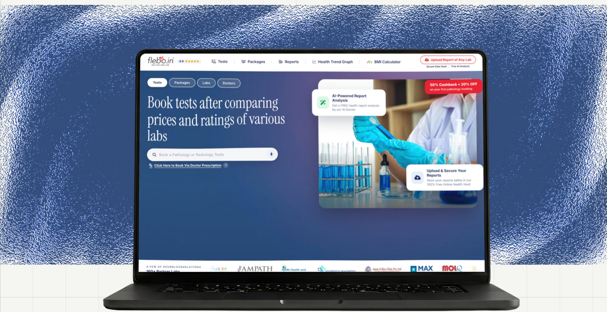
At Flebo, the Product Detail Page (PDP) plays a critical role in the conversion journey. Users discover packages and tests, evaluate trust signals, compare labs, and decide whether to move forward with a booking..
But while tracking user behaviour across the funnel, we noticed a recurring problem:
Users were spending time on the PDP, especially around packages, but many were exiting before making a booking.
This confusion was directly impacting user trust and decision-making.
In healthcare, users rarely book based on a package name alone. They need to know exactly which tests they're getting and why. When the same package showed 58 tests at one lab and 98 at another, users had no reliable way to compare, and hesitation turned into drop-off. Users weigh price, turnaround time, accreditation, and reviews before choosing where to go. Consistent, verifiable test information had become the foundation of the entire booking decision.
Users couldn't trust what they were booking, what they'd pay, or where to go and so many never finished booking at all.
To understand what was happening I collaborated with the product owner to understand and analyse the user behaviour from past.
User were actively looking for packages but it was too difficult to understand what package is providing which test and even someone moves forward after selecting a package it was the lab listing page which shows multiple labs providing the selected package. But every lab is providing different number of tests and pricing is also different.
The audit found four trust failures, all variations of one theme — numbers without context:
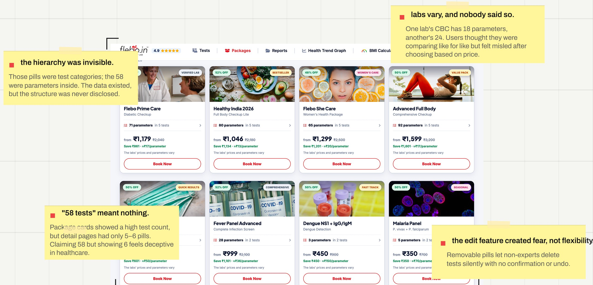
Our first objective was simple:
make booking a package or test feel clear from the very first step.
Rather than simply reducing the number of screens, we focused on the points where users lost confidence.
We redesigned the booking flow into a shorter, linear journey and surfaced pricing early, before users spent time entering their details. We also reorganised the navigation around what users actually came for: tests, packages, labs, and reports.
The goal wasn't just to reduce steps. It was to give users enough clarity to trust the process before committing. And it worked
Users saw the package details 2 steps earlier, and during testing, nobody described the flow as confusing.
But solving one problem exposed other.
Once package detail was visible, users started comparing labs before booking. But that comparison quickly exposed another problem: the same package could look very different from one lab to another.
For example, a user might select Package A with 89 tests. Once they reached the lab listing, they could see that the same package offered by different labs had different test counts — and different prices.
This was not necessarily an error. Each lab could structure and price the package differently. But the experience didn't make that distinction clear.
In testing, users opened multiple lab pages, compared prices manually, and went back and forth between packages to understand what they were actually getting.
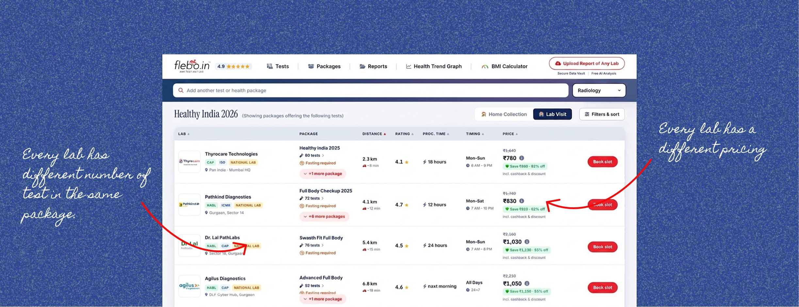
The problem was no longer simply
Users can't see the package details.
It became
Users can see the lab list, but they can't see which tests and parameters are included at each lab, compare the differences, or understand that the package can vary from lab to lab.
Making package detailed card had created a bigger comparison problem: users needed a clear way to compare both the price and what was included in each lab's version of the package.
At this point, we looked beyond how users moved through the flow and focused on how they actually made the decision.
Price wasn't the only factor. Users were weighing price, turnaround time, accreditation, and what was included in the package.
Instead of making users collect that information across different pages, we asked:
What if comparison happened in one place, with the same information for every lab?
We introduced a side-by-side lab comparison and standardised package information so the full test list was always visible.
We also allowed users to remove tests they didn't need from a package.
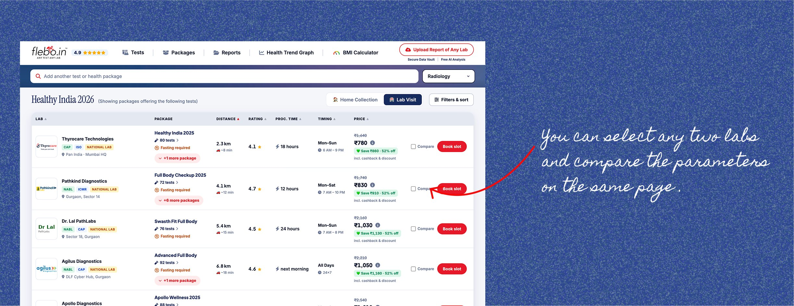
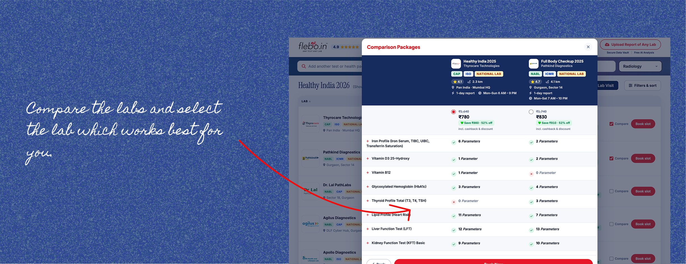
The goal wasn't to add more information. It was to make the information consistent enough for users to make a decision.
The comparison reduced back-and-forth between pages, and users had more confidence in package details once they could see exactly what was included.
But giving users more control exposed another gap.
Once a user selected a package, the listing page showed every test included in that package as a pill above the lab list. Each test had a cross icon, allowing users to remove it.
On paper, this gave users control over the package. In practice, it created more confusion.
Most users aren't familiar with individual test names or what each test is meant to measure. Removing a test without understanding its purpose could mean removing something they actually needed. And once removed, there was no clear context to help them decide whether to add it back. We also found that editing a package at the individual-test level wasn't the right interaction for this journey.
So we removed the option to edit or remove tests directly from an existing package.
Instead, once users selected a lab and moved into the booking flow, they had clearer choices:
The package itself remained intact.
This reduced the need for users to make decisions about individual tests they might not understand, while still giving them flexibility to add what they needed.
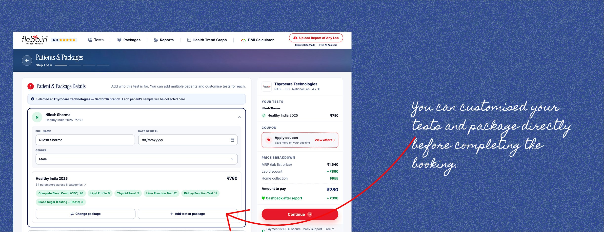
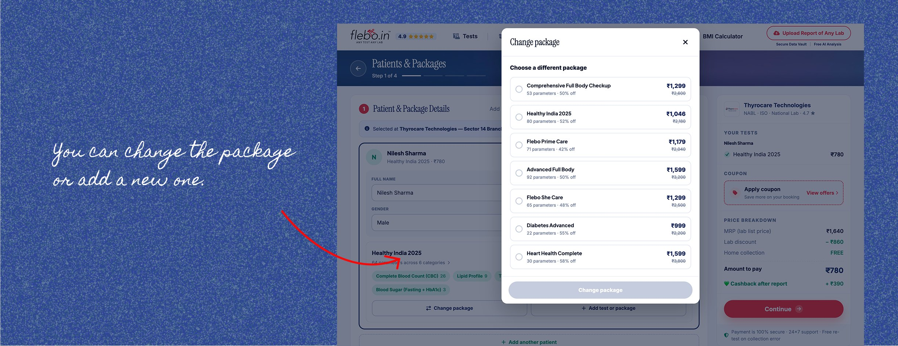
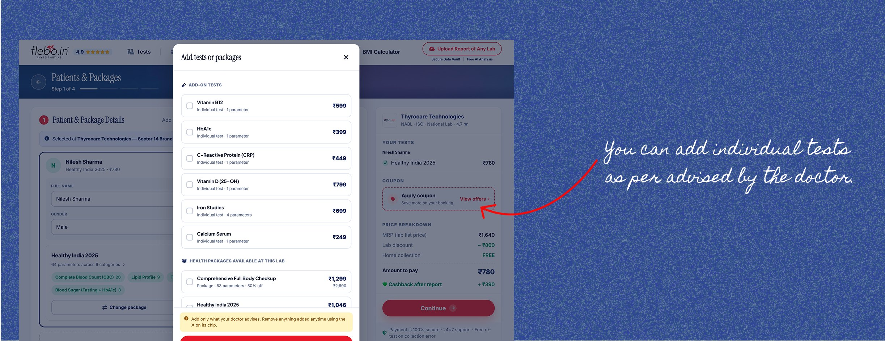
The Solution : AI-Powered Report Summaries
For most people, a lab report is a wall of numbers without much context.
Users don't just need their results. They need to understand what those results mean for them.
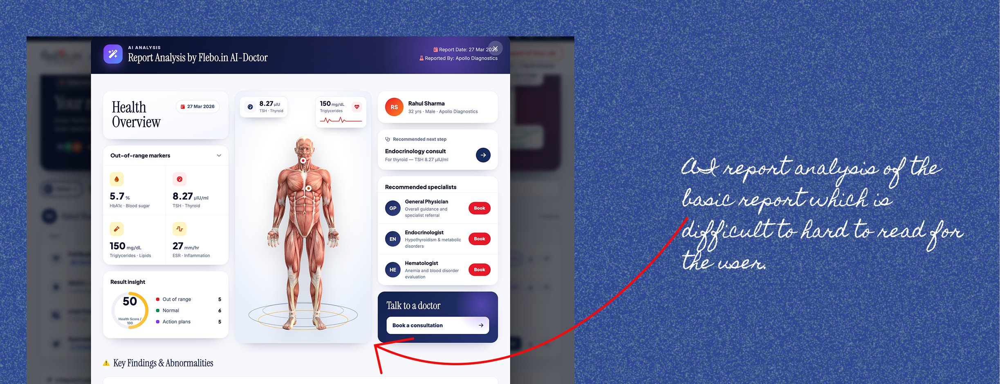
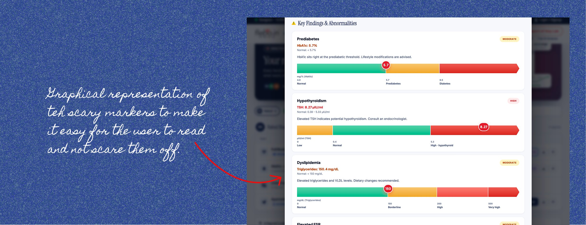
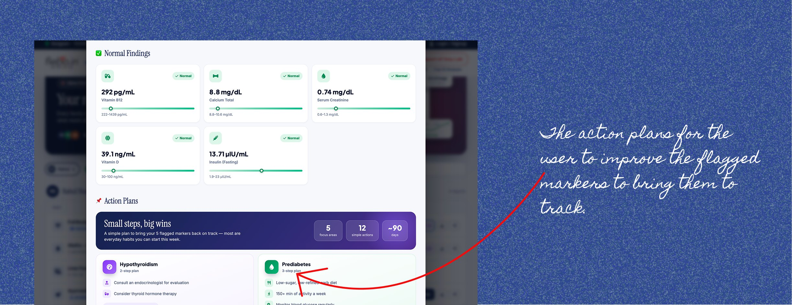
A key UX decision was to avoid language that could be interpreted as a diagnosis.
Health results are personal and context-dependent. The same value can mean different things for different people.
Instead of
Your result is bad
The experience focused on:
This value is outside the typical range here's what it usually relates to, and what to ask your doctor.
This moved the experience from raw data to useful context while keeping medical judgement where it belongs.
From a product perspective, trust no longer ended at booking. It continued through to the point where users needed clarity most.
As the UX/UI Designer on the project, I worked on:
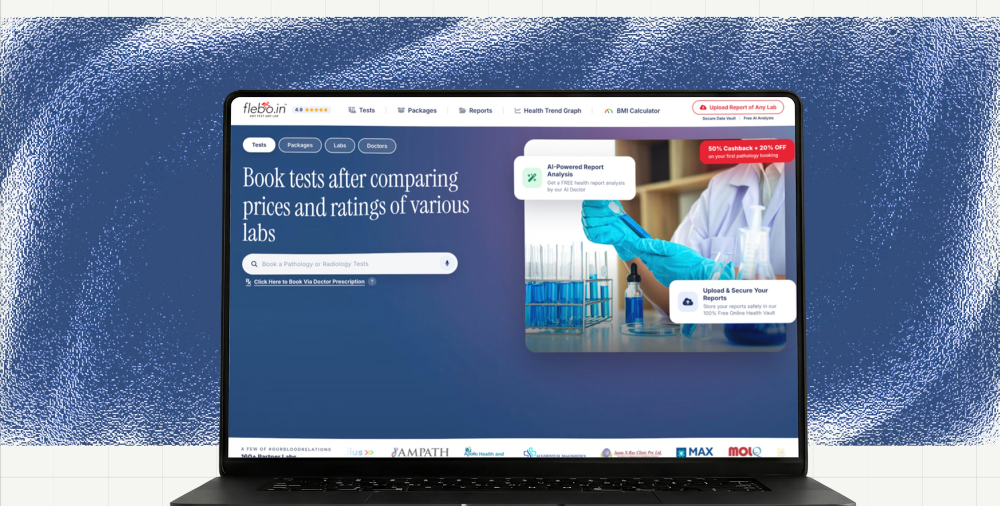
The redesign changed how users moved from intent to booking, and from receiving results to understanding them.
One of the biggest learnings from this project was that transparency creates new expectations.
Showing the price solved one problem, but immediately raised the next question:
what am I paying for, and which option should I choose?
Each improvement exposed the next gap.
Trust in a healthcare product isn't built at one point in the journey. It's cumulative. A hidden price, an inconsistent test list, or an unexplained result can undermine the confidence built earlier.
This project reinforced that good UX in high-stakes journeys isn't about giving users more information. It's about making sure the information is clear, consistent, and useful enough to trust at every step.